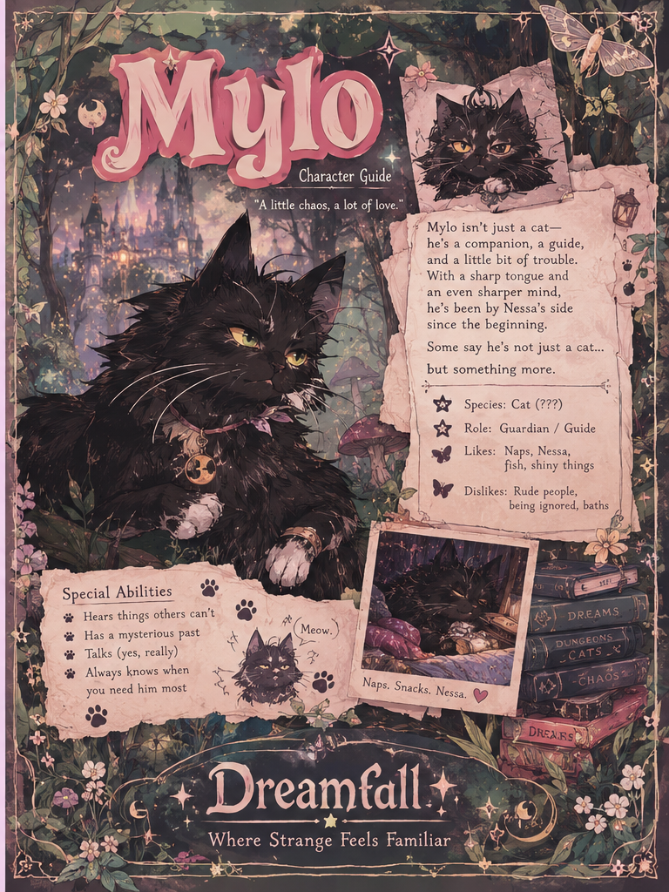

Character Guide
Mylo
A little chaos, a lot of love.

Mylo
Mylo isn’t just a cat. He’s a companion, a guide, and a little bit of trouble. With a sharp tongue and an even sharper mind, he has been by Nessa’s side since the beginning.
Species: Cat (???)
Role: Guardian / Guide
Likes: Naps, Nessa, fish, shiny things
Dislikes: Rude people, being ignored, baths
Some say he’s not just a cat… but something more.